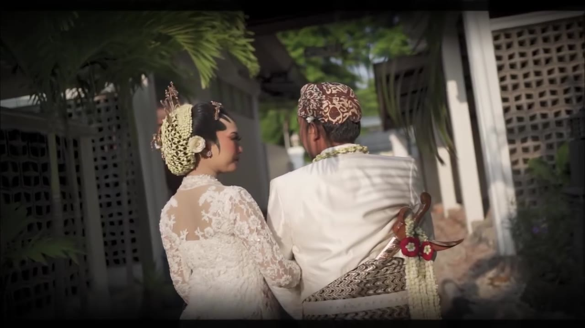
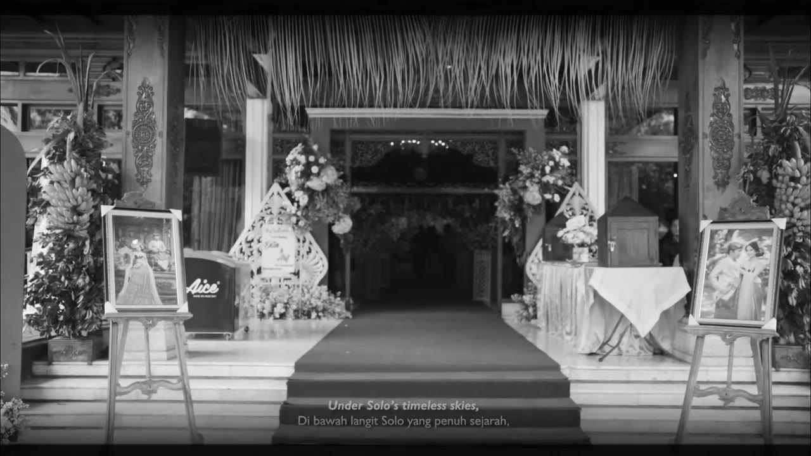
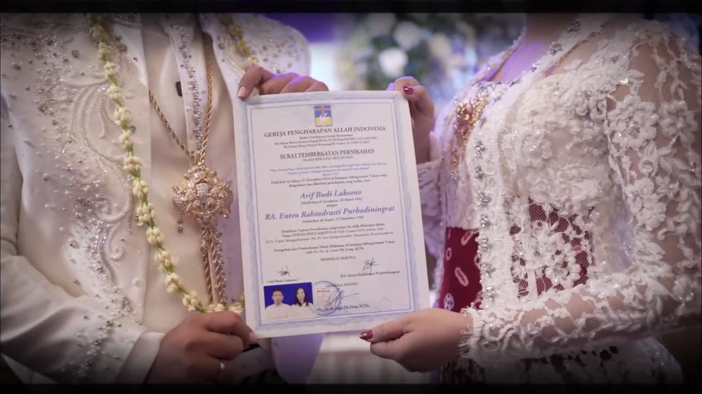
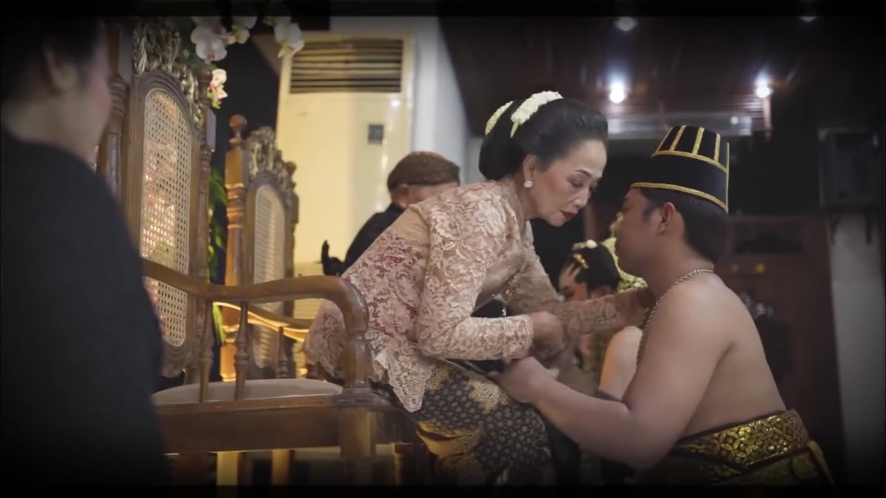
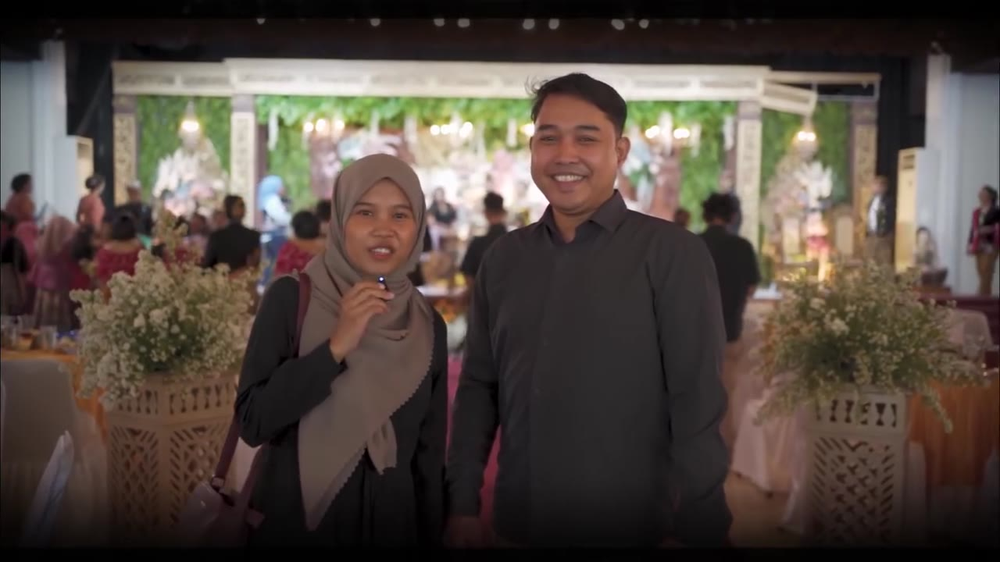

Wedding Days — Arif & Entin
A cinematic wedding story shaped through atmospheric venue details, intimate portraits, traditional Javanese rituals, and heartfelt moments with family and guests.

Project Overview
Wedding Days — Arif & Entin documents the celebration of Arif Budi Laksono and RA Enten Rahindrasti Purbodiningrat on 2 November 2024 in Solo, Indonesia.
The film moves from venue and decoration details to intimate portraits of the couple, the wedding ceremony, traditional Javanese customs, and moments shared with family and guests. The sequence balances the elegance of the setting with the personal and cultural meaning of the day.
Editing Direction

Storytelling & Pacing
The sequence establishes the venue and its details first, then introduces the couple before moving into the ceremony, traditional Javanese rituals, family interactions, and reception moments. This progression gives the celebration context while keeping the couple and meaningful moments at the center of the story.
Monochrome Opening & Color Transition
Black-and-white venue shots create a timeless opening. The film then transitions into full-color scenes, bringing out the wedding attire, floral decoration, and warm tones of the celebration. Title cards and the opening phone-rotation cue establish the film's presentation before the main story unfolds.
Story Structure

From Setting to Celebration
The narrative begins with the venue, floral arrangements, and carefully composed detail shots. It then shifts to the couple and ceremony, followed by traditional rituals and family moments. The later reception and guest scenes broaden the story before the closing credits bring the film to a finish.
This sequence creates a clear journey from atmosphere and anticipation to ceremony, cultural traditions, and celebration.


Visual Tone & Presentation
Monochrome Opening, Full-Color Story
The opening uses monochrome imagery for a timeless, atmospheric introduction. Later full-color scenes emphasize the wedding attire, floral arrangements, and warm tones of the traditional celebration. These visual shifts help distinguish the opening mood from the more personal moments that follow.


Mobile Viewing Cue
Near the beginning, an on-screen prompt asks viewers to rotate their phones for the horizontally composed footage. This cue is part of the original viewing experience, so the supplied portrait MP4 should be kept intact when embedding the film on the project page.
Final Result
A 3-minute, 34-second wedding film following the couple's day from atmospheric venue details to the ceremony, Javanese traditions, and shared moments with family and guests.


Project Credits
Photography & Videography: Gav Photograph
Decoration: DND Decoration
Makeup Artist: Iyum Makeover
Editing & Post-Production: ZIPPERIZ